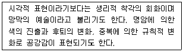
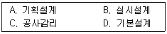
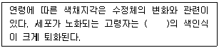
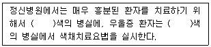
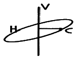
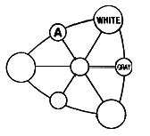
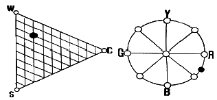

컬러리스트산업기사 (2014-08-17 기출문제)
1과목: 색채심리
1. 1990년 프랭크 H.만케가 정의한 색채체험에 영향을 주는 6개의 색경험의 피라미드에 해당하지 않는 것은?
- 개인적 관계
- 시대사조, 패션스타일의 영향
- 문화적 영향과 매너리즘
- 의식적 집단화
(정답률: 60%)

2. 안전표지의 의미와 배치에서 그 의미에 부합하는 색 조합이 틀린 것은?
- 초록과 햐양 대비색 – 안전한 상태
- 노랑과 검정 대비색 – 잠재적 위험 경고
- 빨강과 하양 대비색 - 출입금지
- 파랑과 하양 대비색 – 안전조건
(정답률: 56%)
3. 컬러 이미지 스케일에 대한 설명 중 틀린 것은?
- 색채이미지를 어휘로 표현하여 좌표계를 구성한 것이다.
- 유행색 경향 및 선호도 비교분석에 사용된다.
- 색채의 3속성을 체계적으로 이미지화한 것이다.
- 색채가 주는 느낌, 정서를 언어스케일로 나타낸 것이다.
(정답률: 28%)
4. 연령에 따른 색채선호에 대한 설명 중 틀린 것은?
- 생후 6개월이 지난 유아는 원색을 구별할 수 있다.
- 고령자의 경우 난색계열의 색채를 더 잘 식별할 수 있다.
- 성인이 되면서 점차 단파장의 색채를 선호하는 경향이 있다.
- 연령이 낮을수록 단파장의 색채를 선호한다.
(정답률: 69%)
5. 표본조사의 방법 중 조사대상 전체를 조사하는 대신 일부분을 조사함으로써 전체를 추측하는 조사방법은?
- 다단추출법
- 계통추출법
- 무작위추출법
- 등간격추출법
(정답률: 43%)
6. 고가, 고전의상, 귀족, 고귀, 엄숙, 비애, 고독을 연상하여 고급이미지를 나타내는 색은?
- 보라
- 녹색
- 파랑
- 회색
(정답률: 77%)
7. 국가 및 문화권에 다른 선호 색상의 연결이 틀린 것은?
- 이슬람교 문화권 - 초록
- 불교 문화권 - 노랑
- 중국 - 빨강
- 아프리카 – 주황
(정답률: 60%)
8. 요하네스 이텐의 계절과 연상되는 배색이 아닌 것은?
- 봄은 밝은 톤으로 구성한다.
- 여름은 원색과 해맑은 톤으로 구성한다.
- 가을은 여름의 색조와 강한 대비를 이룬다.
- 겨울은 차고, 후퇴를 나타내는 회색톤으로 구성한다.
(정답률: 70%)
9. 긍정적 연상으로는 성숙, 신중, 겸손의 의미를 가지나 부정적 연상으로 무기력, 무관심, 후회의 연상이미지를 가지는 색은?
- 보라
- 검정
- 회색
- 흰색
(정답률: 62%)
10. 색채 선호와 관련된 설명으로 거리가 먼 것은?
- 서구문화권의 영향으로 성인 절반 이상이 청색을 선호한다.
- 어린 아이들은 빨강과 노랑 등 채도가 높은 원색을 선호한다.
- 자동차에 대한 선호색은 자연환경, 생활패턴 등에 따라 차이가 있다.
- 연령에 따른 색채선호의 경향은 인종과 국가 간에 현격한 차이가 나타난다.
(정답률: 35%)
11. 색채로 석역을 진단하는 것에 대한 설명 중 옳은 것은?
- 심리테스트는 규격화된 과제를 부여하고 그에 대한 반응의 개인차를 조직적으로 처리하고 기술하는 방법이다.
- 절차와 해석이 검사자의 주관에 따르므로 검사자의 능력이 중요하다.
- 규격화된 심리테스트 보다는 심리적인 특징에 맞추어 수시로 변화를 주어야 한다.
- 색에 대한 개인의 반응 차이를 이용한 심리테스트를 통해 성격이나 병리를 판단할 수 없다.
(정답률: 64%)
12. 석유나 가스의 저장 탱크를 흰색으로 칠하는 이유는?
- 반사율이 높은 색이므로
- 팽창서이 높은 색이므로
- 흡수율이 높은 색이므로
- 명시성이 높은 색이므로
(정답률: 64%)
13. 일반적으로 차분함을 선호하는 남성용 제품에 활용하기 좋은 색은?
- 밝은 노랑
- 선명한 빨강
- 어두운 청색
- 파스텔 톤의 분홍색
(정답률: 83%)
14. 색채의 공감각에 대한 이론을 주장한 사람과 내용이 잘못 연결된 것은?
- 뉴턴 – 색채와 소리 : 빨강(도), 주황(레), 노랑(미), 초록(파), 파랑(솔), 남색(라), 보라(시)
- 카스텔 – 음계와 색 : C는 청색, D는 초록, E는 노랑, G는 빨강, A는 보라
- 비렌 – 색채와 모양 : 빨강은 뾰족하고 날카로운 느낌으로 삼각형 연상
- 이텐 – 색채와 모양 : 수직과 수평선의 늑성이 있는 보든 모양은 사각형과 관련
(정답률: 58%)
15. 제품이나 서비스를 보다 많이 그리고 효율적으로 판매하기 위해 소비자의 심리를 분석하거나 판촉활동을 펼치는 일연의 황동을 의미하는 것은?
- 마케팅(Marketing)
- 디자인(Design)
- 촉진(Promotion)
- 소통(Communication)
(정답률: 67%)
16. 오스굿이 규명한 의미 공간의 대표적인 차원에 속하지 않는 것은?
- 좋다 – 나쁘다
- 크다 – 작다
- 빠르다 – 느리다
- 선명하다 – 약하다
(정답률: 62%)
17. 색채를 자극함으로써 생기는 감정의 일종으로 개인의 생활 경험과 깊은 관련이 있고, 사회적ㆍ역사적인 선입관에 의해서도 영향을 받는 것은?
- 색채연상
- 대비효과
- 착시현상
- 잔상효과
(정답률: 79%)
18. 색채 조사 방법 중에서 디자인과 관련된 이미지어들을 추출한 다음, 한 쌍의 대조적인 형용사를 양 끝에 두고 조사하는 방법은?
- 리커트 척도법
- 의미 미분법
- 심층 면접법
- 좌표 분석법
(정답률: 18%)
19. 색채의 공감각에 대한 설명으로 틀린 것은?
- Pale tione의 빨강 : 부드러운 음색
- Dull tione의 빨강 : 탁한 음색
- Vivid tione의 빨강 : 부드럽고 화사한 음색
- Dark tione의 빨강 : 무겁고 중후한 음색
(정답률: 64%)
20. 색채선호의 원리를 설명한 것으로 틀린 것은?
- 흰색은 민족과 문화를 넘어서 선호하는 색이다.
- 지역의 특징적 선호색은 기후에 많은 영향을 받는다.
- 연령이 낮을수록 원색계열을 선호한다.
- 라틴계 민족은 난색계 색채를 선호한다.
(정답률: 64%)
2과목: 색채디자인
21. 디자인 원리 중 하나인 균형에 속하지 않는 것은?
- 대칭
- 배열
- 비대칭
- 종속
(정답률: 0%)
22. 신문이나 잡지의 기사 혹은 책의 내용을 이해를 돕기 위해 하나의 구체적 그림으로 표현하는 것을 말하며 각자 개성적인 작품 세계가 보인다는 점에서 순수회화와의 경계가 뚜렷하진 않지만, 항상 대중의 요구에 맞춰 그려진다는 점에서 목적 미술이라고 할 수 있는 분야는?
- 일러스트레이션
- 대중미술
- 아이덴티티 디자인
- 타이포그래피
(정답률: 48%)
23. 보기의 설명에 해당되는 사조는?

- 팝아트(pop art)
- 키네틱 아트(kinetic art)
- 옵아트(op art)
- 아르데코(art deco)
(정답률: 80%)
24. 포스트모더니즘의 경향에 관한 설명 중 옳은 것은?
- 하이테크 지향
- 근대디자인의 탈피, 기능주의 반대
- 전반적인 대중문화의 흐름에 반대
- 전통적 생활양식에 근거한 생활문화 실천
(정답률: 45%)
25. 평면 디자인을 하기 위한 시각적 요소에 속하지 않는 것은?
- 형상
- 색채
- 중력
- 재질감
(정답률: 72%)
26. 최소한의 예술이라고 하는 미니멀리즘의 색채 경향이 아닌 것은?
- 개성적 성격, 극단적 간결성, 기계적 엄밀성을 표현
- 통합되고 단순한 색채 사용
- 시각적 원근감을 도입한 일루전(illusion)효과
- 순수한 색조대비와 비교적 개성 없는 색채도입
(정답률: 48%)
27. 상품전시를 위한 배경색 선택 시 상품의 명시성을 높이고 품위 있어 보이기 위한 색채계획으로 가장 적합한 것은?
- 배경색을 중명도의 난색으로 표현한다.
- 배경색을 중명도의 보색으로 표현한다.
- 배경색을 저명도의 진출색으로 표현한다.
- 배경색을 고명도의 유사색으로 표현한다.
(정답률: 56%)
28. 실내 디자인의 프로세스(Process)가 올바르게 나열된 것은?

- A – D – B - C
- D – A – B - C
- B – A – D - C
- B – C – D – A
(정답률: 42%)
29. 미용에서 이미지 메이킹을 설명한 것으로 옳은 것은?
- 내추럴(natural)이미지 : 고전적이며 보수적이지만 중후한 이미지를 가지고 갈색, 와인 골드, 다크 그린 등의 색을 사용한다.
- 엘레강스(elegance)이미지 : 낭만적이며 감미로운 분위기를 상태를 말하며 핑크, 옐로우, 퍼플 등의 색을 주조색으로 한다.
- 댄디(dandy)이미지 : 멋있는, 세련된, 간결미 등의 긍정적 이미지를 가지고 안정된 생활과 지성미를 포함한다. 검정, 다크 그레이, 갈색계열의 컬러를 가진다.
- 포크로어(folklore)이미지 : 자유분방한 분위기를 밝고 건강하고 활동적이고 역동적인 이미지를 나타내며 색상은 부드럽고 청명한 색과 화려한 색을 2~3가지로 배색한다.
(정답률: 50%)
30. 다음 중 주의와 정보전달의 목적을 위해 강렬한 색채계획으로 이루어지는 환경디자인 영역은?
- 환경정보시스템
- 환경조형물
- 경관디자인
- 주거환경
(정답률: 59%)
31. 인간의 의사소통에 필요한 청각적, 시각적, 시청각적, 동작적 전언(Message)에 속하지 않는 것은?
- 지표(index)
- 신호(signal)
- 아이콘(icon)
- 콘셉트(concept)
(정답률: 53%)
32. 모델링의 종류 중 외형상으로 실제 제품에 가깝도록 도면에 따라 모형으로 만드는 것은?
- 프로토타입 모델
- 프레젠테이션 모델
- 러프모델
- 스케치모델
(정답률: 50%)
33. 디자인 사조에서 대표적으로 사용된 색채의 특성에 관한 설명 중 바르게 된 것은?
- 다다이즘의 색은 화려한 면과 어두운 면을 동시에 갖고 있으면서, 극단적인 원색대비를 사용하기도 한다.
- 아르누보는 큐비즘의 영향을 받아, 차분하고 자연적인 색채를 사용하며, 공간적이고 입체적인 색채의 효과를 강조한다.
- 팝아트는 색의 원근감, 진출감을 흑과 백 또는 단일 색조를 강조하여 사용한다.
- 옵아트는 복제성과 보편성을 강조하기 위하여 전체적으로 어두운 색조에 혼합한 강조색을 사용한다.
(정답률: 20%)
34. 다음 중 실내디자인에서 공간을 구성하고 있는 기본요소와 비교적 거리가 먼 것은?
- 바닥
- 천장
- 벽
- 가구
(정답률: 87%)
35. 디자인의 조건에 관한 설명으로 틀린 것은?
- 합목적성 : 작품의 제작에 있어 실제의 목적에 알맞도록 하는 것
- 심미성 : 형태, 색채, 재질의 아름다움을 나타내는 것
- 경제성 : 최상의 디자인을 창출하기 위해 인적, 물적자원을 최대한 투입하는 것
- 친자연성 : 생태학적으로 건강한 환경을 구축하는 것
(정답률: 68%)
36. 디자인이 갖추어야 할 조건 중 가장 중요한 것은?
- 실용적 기능과 조형적 아름다움
- 전체 형태와 단순화
- 자연형태를 인공형태로 변화
- 개성적 표현과 상징적 표현
(정답률: 85%)
37. 디자인 과정에서 드로잉의 주요역할과 거리가 먼 것은?
- 아이디어의 전개
- 형태 연구 및 정리
- 사용성 검토
- 프레젠테이션
(정답률: 50%)
38. 색채계획의 목적에 대한 설명으로 틀린 것은?
- 인상과 개성을 부여하고 기능을 명확히 한다.
- 대량생산을 위해 타 분야의 색채와 통일시킨다.
- 심리적인 안정을 제공하고 온도감을 조절한다.
- 질서를 부여하고 통합한다.
(정답률: 62%)
39. 현대 디자인의 이념적 배경이 된 미술공계운동의 기수가 된 사람은?
- 발터 그로피우스
- 윌리엄 모리스
- 요하네스 이텐
- 헤르만 무지테우스
(정답률: 67%)
40. 서로 관련 없는 요소들 간의 결합을 의미하는 그리스어에서 유래한 것으로, 문제를 보는 관점을 완전히 달리하여 여기서 연상되는 점과 관련성을 찾아 아이디어를 발상하는 방법은?
- 시네틱스(synectics)법
- 체크리스트(checklist)법
- 마인드 맴(mind map)법
- 브레인스토밍(brainstorming)법
(정답률: 74%)
3과목: 섹채관리
41. 다음 중 색자극 외에 질감, 반사, 그림자의 영향을 받지 않고 순수한 색만을 관찰할 수 있는 조건으로 옳은 것은?
- 개구색
- 북측주광
- 광원색
- 원자극의 색
(정답률: 43%)
42. 수은램프에 금속할로겐 화합물을 첨가하여 만든 고압수은등으로서, 효율과 연색성이 높은 조명은?
- 나트륨등
- 메탈할라이드등
- 크세논 램프
- 발광다이오드
(정답률: 60%)
43. 색역은 디바이스가 표현가능한 색의 영역을 말한다. 색역에 대한 설명 중 틀린 것은?
- 모니터 디스플레이의 색역은 색도도상에서 삼각형을 이룬다.
- 프린터의 색역이 모니터의 색역보다 넓을 수도 있다.
- 디스플레이의 감마는 색역과는 무관하다.
- 디스플레이가 표현가능한 색의 수와 색역의 넓이는 비례한다.
(정답률: 0%)
44. 모니터 감마(Gamma) 조정에 대한 설명 중 옳은 것은?
- 컴퓨터 모니터의 백색 및 흑색에 영향을 미친다.
- 모니터의 성능에 따라 RGB 각각의 감마를 결정할 수 있으나 이를 통합하여 하나의 모드의 감마로 설정하기는 불가능하다.
- 매킨토시의 경우 2.2을, PC의 경우 1.8의 기준감마를 사용한다.
- 모니터 디스플레이의 중간톤 표현 수준을 말한다.
(정답률: 16%)
45. 분광광도계(spectrophotometer)를 이용하여 측정한 삼자극치 XYZ값 중 Y값의 단위로 옳은 것은?
- cd/m2
- 단위없음
- Lux
- Watt
(정답률: 15%)
46. 다음 컬러 인덱스 제 3판에 대한 설명 중 옳은 것은?
- 약 9000개 이상의 염료와 약 600개의 안료가 수록되어 있다.
- 화학구조의 번호는 4자리 숫자로 주어진다.
- 색료의 색상에 따른 고유한 분류방법을 갖고 있다.
- 30개의 제네릭 클래스(generic class)로 나누어진다.
(정답률: 12%)
47. 다음 중 효율적인 염색 방법에 대한 조건이 아닌 것은?
- 염료가 잘 용해되어야 한다.
- 분말의 염료에 먼지가 없어야 한다.
- 액체용액을 오랜 기간 저장해도 변하지 않아야 한다.
- 흡착력이 높지 않아야 한다.
(정답률: 79%)
48. 다음 조명 방식 중에서 눈부심이 가장 적은 것은?
- 직접조명
- 반직접조명
- 간접조명
- 반간접조명
(정답률: 58%)
49. 반사색의 색역은 무엇에 의하여 제한을 받는가?
- 색소
- 조명
- 혼색기술
- 고착제
(정답률: 5%)
50. KS A 0062에 의한 색채계와 관련된 것은?
- HV/C
- L*a*b*
- D/N
- P.C.C.S
(정답률: 39%)
51. 다음 중 광택이 가장 강한 재질은?
- 나무판
- 실크천
- 무명천
- 알루미늄천
(정답률: 67%)
52. ICC프로파일을 이용해서 어떤 색공간의 색정보를 변환할 때 사용되는 렌더링 인텐트(rendering intent)에 대한 설명 중 틀린 것은?
- 서로 다른 색공간 간의 컬러에 대한 번역 스타일이다.
- 렌더링 인텐트에는 4가지가 있다.
- 정확한 매칭이 필요한 단색(soild color)변환에는 인지적 렌더링 인텐트가 사용된다.
- 절대색도계 렌더링 인텐트를 사용하면 화이트 포인트보상이 일어나지 않는다.
(정답률: 31%)
53. 연색성을 이용하여 정육점의 조명을 설치하려고 할 때 적합한 것은?
- 백열등
- 적색 광원
- 텅스텐 램프
- 온백색 형광등
(정답률: 58%)
54. 측색 시 조명과 수광의 조건이 아닌 것은?
- ( 0 : 45a)
- (di : 8)
- (d : 0)
- (45 : 45)
(정답률: 44%)
55. 인간의 색채식별력을 감안하여 가장 많은 컬러를 재현할 수 있는 비트 체계는?
- 24비트
- 32비트
- 채널당 8비트
- 채널당 16비트
(정답률: 48%)
56. 한국산업표준(KS)에서 겨정한 측색용 표준광의 색온도에 들지 않는 것은?
- 약 2856K
- 약 6504K
- 약 6774K
- 약 4874K
(정답률: 5%)
57. 광원과 색온도에 대한 설명 중 옳은 것은?
- 색온도는 과원의 색 특징과는 무관하다.
- 색온도는 광원의 실제 온도와 일치하며, 백열등은 밝고 활발한 분위기를 나타낸다.
- 낮은 색온도는 따뜻한 색에 대응되고, 높은 색온도는 시원한 색에 대응된다.
- 일반적으로 연색지수가 90을 넘는 광원은 연색성이 매우 나쁘다고 할 수 있다.
(정답률: 58%)
58. 분광식 색채계의 설명으로 옳은 것은?
- 백열전구와 필터를 함께 사용하여 표준광원의 조건이 되도록 한다.
- PbS는 자외선만을 측정할 수 있다.
- PM tube 는 적외선만을 측정할 수 있다.
- 실리콘 포토다이오드는 가시광선에서 근적외선까지 측정할 수 있다.
(정답률: 12%)
59. 모니터를 보고 작업할 시 정확한 모니터 컬러를 보기 위한 일반적인 조건이 아닌 것은?
- 모니터 캘리브레이션
- ICC 프로파일 인식 가능한 이미징 프로그램
- 시간대에 따라 변하지 않는 일정한 조명 환경
- 높은 연색성(CRI)의 표준광원
(정답률: 27%)
60. 색료의 일반적인 성질에 대한 설명으로 옳은 것은?
- 안료는 착색하고자 하는 매질에 용해된다.
- 염료는 표면에 친화성을 갖는 화학성질을 가지고 있다.
- 안료는 염료에 비해서 투명하고 은폐력이 약하다.
- 도료는 인쇄에만 사용되는 유색의 액체이다.
(정답률: 48%)
4과목: 색채지각의이해
61. 색의 물체와 배경(figure – ground)관계에서 물채색은 5R 4/14이고 배경색은 N2일 때 물체는 어떻게 보이는가?
- 후퇴
- 진출
- 수축
- 동화
(정답률: 57%)
62. 회색 색표를 검정색 바탕 위에 놓을 경우 원래 색보다 밝아 보이는 현상은?
- 채도대비
- 보색대비
- 명도대비
- 면적대비
(정답률: 85%)
63. 빨간색을 응시하다가 순간적으로 백색을 보면 청록색의 잔상이 나타난다. 이러한 색지각 현상을 나타낸 조합은 무엇인가?
- 보색대비, 양성 잔상
- 연변대비, 음성 잔상
- 계시대비, 음성 잔상
- 계시대비, 양성 잔상
(정답률: 57%)
64. 가시광선의 영역 중 최고의 시감도 색은?
- 650nm
- 555nm
- 510nm
- 475nm
(정답률: 45%)
65. 연색성에 관한 설명으로 옳은 것은?
- 박명시에 일어나는 지각현상으로 단파장이 더 밝아 보이는 현상
- 광원에 따라 물체의 색이 다르게 보이는 현상
- 다른 색을 지닌 물체가 특정 조명 아래에서 같아 보이는 현상
- 주변 환경이 변해도 일관성 있게 색의 특성을 느낄수 있는 현상
(정답률: 43%)
66. 색을 감지하는 세포에 관한 설명 중 옳은 것은?
- 간상체는 장파장에 민감하다.
- 간상체는 빛에 민감하고 어두운 곳에서 주로 기능한다.
- 망막에는 색감각에 대응하는 4종류의 추상체가 있다.
- 추상체와 간상체 동시에 활동하는 경우는 없다.
(정답률: 72%)
67. 보색에 관한 설명 중 틀린 것은?
- 혼합하여 무채색이 되는 두 색은 서로 보색관계에 있다.
- 색료혼합의 경우 보색관계에 있는 두 색의 혼합결과는 검정에 가깝다.
- R-BG, G-RP, B-YR은 각각 보색관계이다.
- 색상환에서 비교적 가까운 거리에 있는 색을 보색이라 한다.
(정답률: 76%)
68. 빛의 성질 중의 하나로서, 하나의 매질로부터 다른 매질로 진입하는 파동이 그 경계면에서 진행하는 방향을 바꾸는 현상은?
- 흡수
- 투과
- 굴절
- 회절
(정답률: 65%)
69. 헤링의 색채지각설에서 반대색의 관계가 옳게 연결된 것은?
- 노랑 - 녹색
- 빨강 - 파랑
- 빨강 - 초록
- 노랑 – 빨강
(정답률: 61%)
70. 어느 특정한 색채가 주변 색채의 영향을 받아 본래의 색과는 다른 색채로 지각되는 겨우는?
- 색채의 지각효과
- 색채의 대비효과
- 색채의 자극효과
- 색채의 혼합효과
(정답률: 40%)
71. 붉은 색 물체의 표면에 광택감을 주었을 때 느껴지는 색채 감정의 변화로 옳은 것은?
- 중성색으로 느껴진다.
- 표면이 거칠게 느껴진다.
- 원래의 붉은색 보다 차게 느껴진다.
- 더욱 따뜻하게 느껴진다.
(정답률: 67%)
72. 테이블 상판의 색을 색 견본집을 보고 선정한 결과 원하던 색보다 명도와 채도가 높은 색이 나왔다. 색의 어떤 현상 때문인가?
- 색상대비
- 채도대비
- 연변대비
- 면적대비
(정답률: 63%)
73. 색의 혼합에 대한 결과가 틀린 것은?
- 감법혼색 : megenta + yellow = red
- 가법혼색 : blue + red = megenta
- 감법혼색 : cyan + yellow = green
- 가법혼색 : red + green = cyan
(정답률: 50%)
74. 색의 혼합에 관한 설명 중 틀린 것은?
- 무대조명, 컬러TV에는 가법혼색의 원리가 적용된다.
- 가법혼색의 경우 색을 혼합할수록 명도가 밝아진다.
- 중간혼색은 혼합할수록 실제 명도가 낮아진다.
- 컬러사진은 감법혼색의 원리가 적용된다.
(정답률: 57%)
75. 두 가지 색의 색표를 회전원판 위에 적당한 비례의 넓이로 붙여 빠른 속도로 회전시키면 원판면이 혼색되어 보이는 것과 관련된 혼합은?
- 가산혼합
- 회전혼합
- 병치혼합
- 감산혼합
(정답률: 79%)
76. 베졸드 효과와 관련이 있는 것은?
- 중간혼색
- 회전혼색
- 계시대비
- 감법혼색
(정답률: 32%)
77. 보기의 ( )에 들어갈 내용으로 적합한 것은?

- 청색계열
- 적색계열
- 황색계열
- 녹색계열
(정답률: 53%)
78. 보기의 ( )에 들어갈 내용이 바르게 짝지어진 것은?

- 파랑, 빨강
- 빨강, 파랑
- 자주, 초록
- 보라, 연두
(정답률: 77%)
79. 색의 3속성에 대한 설명 중 틀린 것은?
- 검정색이 섞일수록 채도가 낮아진다.
- 흰색이 섞일수록 채도가 높아진다.
- 검정색이 섞일수록 명도가 낮아진다.
- 흰색이 섞일수록 명도가 높아진다.
(정답률: 57%)
80. 주황을 각각 빨강 바탕, 노랑 바탕 위에 놓았을 때 빨강 바탕 위의 주황은 노란빛을 띤 주황으로, 노랑 바탕 위의 주황은 빨간빛을 띤 주황으로 보이는 현상은?
- 연변대비
- 색상대비
- 명도대비
- 채도대비
(정답률: 63%)
5과목: 색채체계의이해
81. 한국전통색 중 오방정색에 속하지 않는 것은?
- 적색
- 청색
- 녹색
- 흑색
(정답률: 66%)
82. 다음 중 문ㆍ스펜서의 색채 조화론에서 조화의 배색이 아닌 것은?
- 동일조화
- 질서조화
- 유사조화
- 대비조화
(정답률: 15%)
83. 오스트발트 색채조화론 중 기호 pn-pi-pe는 어떤 조화에 속하는가?
- 등색상 계열의 조화
- 등백색 계열의 조화
- 등흑색 계열의 조화
- 등순색 계열의 조화
(정답률: 55%)
84. 색유리와 금속을 활용한 스테인드글라스의 기법을 살리기 위해 가장 적합한 배색방법은?
- 액센트 배색
- 세퍼레이션 배색
- 그라데이션 배색
- 리피티션 배색
(정답률: 69%)
85. 다음 중 톤온톤(tone on tone)배색은?
- 동일색상에서 두가지 색의 명도차를 비교적 크게 둔 배색이다.
- 살구색, 라벤더(lavender)색의 배색이 그 예이다.
- 기본으로 하는 톤에 soft dull톤을 사용한 배색기법이다.
- 비슷한 톤의 조합에 따른 배색기법이다.
(정답률: 31%)
86. 먼셀 색채계의 표기방법인 7.5RP 5/8에 대한 속성이 옳은 것은?
- 명도 7.5, 색상 5RP, 채도 8
- 색상 7.5RP, 명도 5, 채도 8
- 채도 7.5, 색상 5RP, 명도 8
- 색상 7.5RP, 채상 5, 명도 8
(정답률: 78%)
87. 문ㆍ스펜서 색채조화론의 미도에 대한 설명이 틀린 것은?
- 배색의 아름다움을 계산을 통해 수치적으로 표현한 것이다.
- M(미도) = O / C 로 계산된다.
- 미도 계산식에서 O는 복잡성의 요소이다.
- 미도가 0.5이상이면 조화롭다고 한다.
(정답률: 40%)
88. 자연에서 볼 수 있는 배색의 특징이 아닌 것은?
- 순색으로 이루어진 자연이라도 거리에 따라 채도의 변화를 느낄 수 있다.
- 단거리에서 볼 수 있는 자연물의 배색에는 보색대비가 많이 있다.
- 자연의 보색대비는 강렬하고 자극적인 느낌을 준다.
- 그라데이션 배색이 많이 나타나 편안한 느낌을 준다.
(정답률: 44%)
89. DIN의 설명으로 옳은 것은?
- 색상(T), 채도(S), 암도(D)로 표현한다.
- 덴마트 표준화 협회(Denmark Institute fur Normung0가 제안한 색체계이다.
- 어두움의 정도(D)는 0부터 14까지 숫자들로 주어진다.
- 등색상면은 흑색점을 정점으로 하는 정삼각형이다.
(정답률: 45%)
90. 그림의 색입체 개념도에서 C가 의미하는 것은?

- 명도
- 채도
- 순도
- 색상
(정답률: 58%)
91. 오스트발트 색체계의 표기인 ng에서 n은 5.6%, g는 78%일 때 순색량(C)의 혼합비율은?
- 16.4%
- 22%
- 72.4%
- 94.4%
(정답률: 50%)
92. 현색계에 대한 설명으로 옳은 것은?
- 빛의 색을 표기하는데 가장 적합한 색체계이다.
- 색지각에 기반을 두고 색을 나타내는 색체계이다.
- 한국산업표준의 XYZ색체계를 대표적으로 들 수 있다.
- 데이터 정량화 중심으로 변색 및 탈색의 염려가 없다.
(정답률: 53%)
93. 다음 중 오스트발트 색체계와 관련이 없는 것은?
- 등백계열
- 등흑계열
- 등순계열
- 등비계열
(정답률: 65%)
94. 비렌의 색채조화론-색삼각형 그림에서 A에 적합한 용어는?

- TONE
- SHADE
- TINT
- NUANCE
(정답률: 50%)
95. Yxy 색체계의 색을 표시하는 색도도에 대한 설명으로 틀린 것은?
- Red 부분의 색공간이 가장 크고 동일 색채 영역이 넓다.
- 백색광은 색도도의 중앙에 위치한다.
- 색도도 안의 한 점은 혼합색을 나타낸다.
- 말발굽형의 바깥 둘레에 나타난 모든 색은 고유 스펙트럼을 가지고 있다.
(정답률: 50%)
96. 한국산업표준의 계통색명과 그 약호가 옳게 표시된 것은?
- 진한 청록 : BG/dp
- 회보라 : P/n
- 어두운 남색 : BV/dk
- 연한파랑 : B/lt
(정답률: 37%)
97. XYZ 색체계에서 밝기를 나타내는 속성은?
- X
- Y
- Z
- XY
(정답률: 29%)
98. 1976년 국제조명위원회(CIE)가 CIE색도도를 개선하여 지각적으로 균등한 색공간을 가지도록 제안한 색체계는?
- XYZ 색체계
- RGB 색체계
- L*a*b*
- Yxy 색체계
(정답률: 48%)
99. 먼셀 색입체의 수직단면에 관한 설명으로 틀린 것은?
- 수직단면은 같은 명도의 색이 나타나므로 등명도면이라고도 한다.
- 축 자우의 색은 색상환에서 마주보고 있는 보색이다.
- 동일 색상의 명도, 채도 변화를 한 눈에 볼 수 있다.
- 각 색 단면의 가장 바깥쪽 색이 순색이다.
(정답률: 43%)
100. 그림에 위치한 검은 점에 해당하는 NCS의 표기방법은?

- S2020-R30B
- R30B-S2020
- S2080-R30B
- R30B-S8020
(정답률: 20%)
설명: 프랭크 H.만케는 색채체험에 영향을 주는 6개의 색경험을 개인적 관계, 시대사조 및 패션스타일의 영향, 문화적 영향과 매너리즘, 심리적 상태, 물리적 환경, 인지적 해석으로 분류하였습니다. "의식적 집단화"는 이 분류에 해당하지 않습니다. 이는 개인이 아닌 집단의 영향으로 색채를 선택하거나 경험하는 것을 의미합니다. 예를 들어, 특정 집단에서는 특정 색상이 특별한 의미를 가지거나, 특정 색상을 선호하는 경향이 있을 수 있습니다.